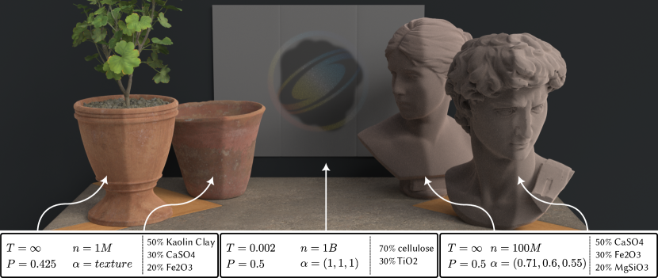
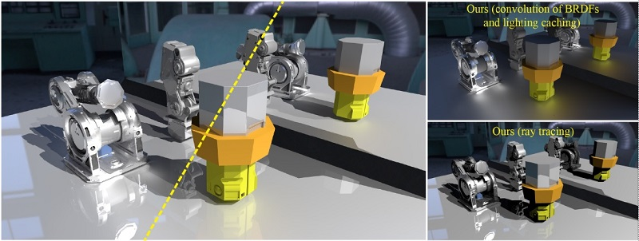
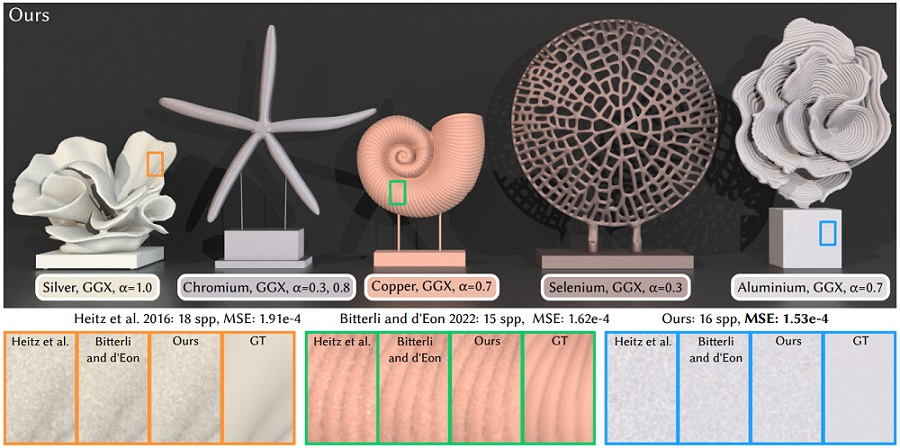
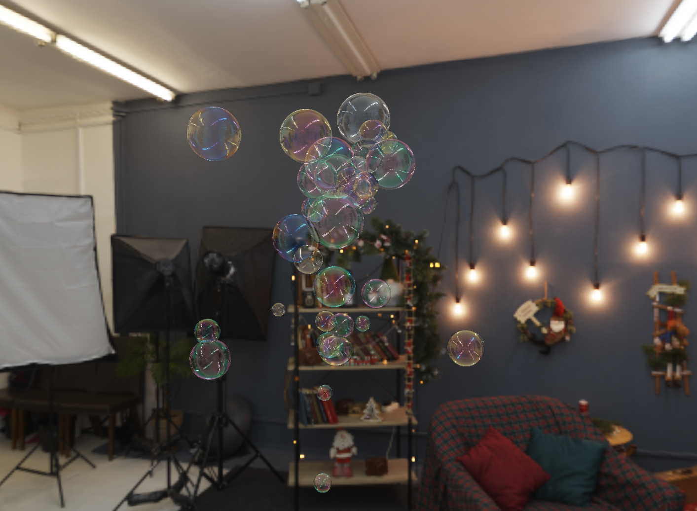

Wet Material Rendering
Developing physically based appearance models for porous, saturated, and other wet materials.
Researcher in Material Appearance and Rendering
Ph.D. student at Nanjing University under the supervision of Prof. Beibei Wang.
My research focuses on realistic material appearance and visual reconstruction. I currently work on wet material rendering, the recovery of material microstructures, and physically based rendering.
I develop principled and practical models that connect material geometry, optical properties, and light transport to reproduce complex real-world appearances.
Research interests: wet material rendering, microstructure reconstruction, and physically based rendering.
Current areas of interest
Developing physically based appearance models for porous, saturated, and other wet materials.
Recovering detailed geometric and statistical microstructures from visual observations.
Simulating light transport and the appearance of materials with complex internal structures.
Papers and preprints


Youxin Xing*, Gaole Pan*, Xiang Chen, Ji Wu, Lu Wang, and Beibei Wang
* Equal contribution.

Yuang Cui, Gaole Pan, Jian Yang, Lei Zhang, Ling-Qi Yan, and Beibei Wang
Selected demos

Interactive WebGL2The complete WebGL2 port of the original HarmonyOS/OpenGL ES project, including Belcour thin-film interference, HDR reflection and transmission, quadrupole deformation, multi-bubble physics, shared films, and interactive foam connections.
Academic background
Ph.D. Student in Computer Science and Technology
M.S. in Computer Science and Technology
B.Eng. in Computer Science and Technology
Research discussions and collaboration
I welcome conversations about research, open-source software, and potential collaborations.
Email: gaolepan@smail.nju.edu.cn
GitHub: github.com/PPPGLL